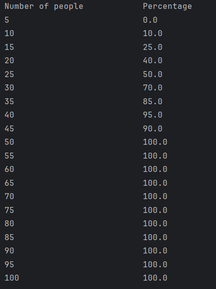

Hello! My name is Jake Coleman and I am a senior at the University of San Diego with a major in Sustainable Engineering, and minors in Computer Science and Math. I run division 1 cross country, and love exercising. I grew up in New York, and love both the East coast and West coast. Check out my athletics profile for more information on me and our cross country team.
I have experience as a Project Engineer Intern for Baker Electric in the commercial solar department, helping them generate rooftop solar plans for various real world projects. I also have worked in the Office of Sustainability at USD helping track and analyze our energy and water use. My expected graduation date is May 2026, and I am looking for jobs in the sustainable energy field. If you would like to connect with me, or are more interested in my professional work, check out my LinkedIn Profile.
I love running, swimming, cycling, hiking, video games, board games, and honestly any kind of activity with friends or family.

The Birthday Paradox essentially states that in a group of 23 people, there is more than a 50% chance that two people have the same birthday, and as the number in the group increases, even by small amounts, that probability greatly increases. This feels counter-intuitive since there are 365 potential birthdays a person can have. For this project we wanted to visualize this Birthday paradox with code.
Functional requirements/what the project does:
Project design
This project had 4 classes that helped run the project:
-
Implementation
For this project, I implemented the Simulation class, the Birthday class, and assisted in implementing clean code principles to all classes for better readability and debugging.
email address